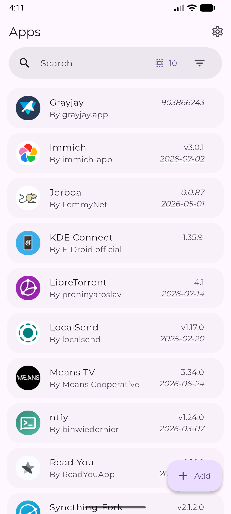
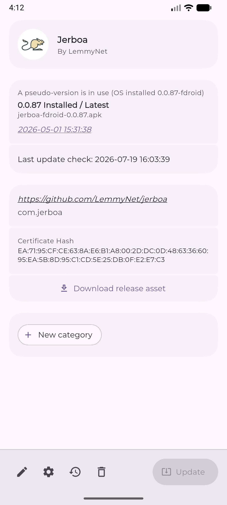
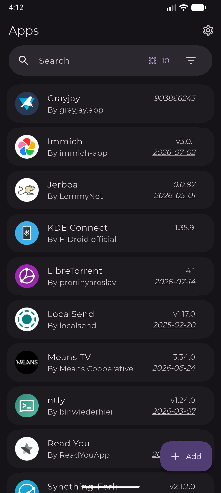

手机里的应用总追不上最新版？Obtainium 五分钟帮你搞定
还在一个个打开应用商店检查更新？Obtainium 把散落在 GitHub、GitLab、F-Droid 各处的应用更新统一追到你手机上，新手也能五分钟上手。
这篇能带你从完全不懂到用起来，不需要任何基础。
它到底是干嘛的——一个生活化类比
你手机上装了二三十个应用，有的从应用商店来，有的是开发者直接给的 APK，有的藏在 GitHub 的发布页里。想更新的时候，你得挨个打开商店刷一刷，或者翻收藏夹里的书签找发布页——赶上某个开发者换了仓库地址，还得重新搜半天。
Obtainium 就是帮你把这些散的全串起来的那个"追新管家"——它的官网上有完整的功能介绍。你只需要告诉它每个应用从哪里来（一个链接就行），剩下的它自己干：定期去看有没有新版本，有了就通知你，甚至可以后台静默装上。它不托管任何应用本身，只是帮你盯着那些发布页面——所以它能追到的应用，比任何一家商店都多。

五分钟上手——从安装到第一次跑通
第一步：装上它
安装包从官方下载拿，点开会被系统拦一下（Android 默认不让装非商店的 APK）。不同手机品牌的提示长得不一样，但套路都差不多：弹出"未知来源"警告 → 你点设置 → 找到允许安装 Obtainium 这项开关打开 → 回去继续装。整个过程不到一分钟。
装完打开，你会看到底部四个标签页：应用、添加、导入导出、设置。界面很干净，Material Design 风格，第一次进来应用列表是空的——正常，你还没告诉它要追什么。
第二步：把 Obtainium 自己加进去
这是官方推荐的"练手题"。点底部的"添加"标签，在链接那栏粘贴 Obtainium 的 GitHub 发布页地址。Obtainium 会自动识别这是一个 GitHub 源，不用你手动选。
填完链接往下滑，能看到一堆高级选项——全部先跳过，直接点右上角的保存。回到"应用"标签，你会看到列表里多了一条，状态显示"正在检查更新"。等几秒，它会告诉你当前装的版本是不是最新的。
第三步：再添几个你真正关心的应用
这一步就随意了。你手机上有没有哪个应用总不更新？或者你关注了某个开发者的 GitHub？把发布页链接粘进来就行。Obtainium 支持的源非常多：GitHub、GitLab、F-Droid、APKMirror，甚至任意网页（它会自己在页面里找 APK 链接）。国内的应用宝、酷安、华为应用市场这些也在支持列表里。

五个步骤走完，你已经有了一个自动追新的应用列表。接下来让它真正"活"起来。
上手后先玩这三个功能
功能一：让它在后台自动检查
默认情况下 Obtainium 不会自己跑后台任务。打开"设置"标签，找到"后台更新"相关的开关，打开它。你会看到两个选项：WorkManager 和前台服务。选哪个简单说一下：WorkManager 是 Android 系统的定时任务，省电但不够准时；前台服务是 Obtainium 自己挂一个通知常驻后台，更靠谱但多一个通知栏图标。新手推荐先开 WorkManager 试试，如果觉得它总漏掉更新再换前台服务。
设置里还可以约束更新条件：只在 Wi-Fi 下检查、只在充电时下载、多久检查一次。建议把检查间隔设长一点（比如每天一次），太频繁既费流量又容易被 GitHub 限额。
功能二：批量导入——一秒加十个应用
如果你之前收藏了一堆应用的发布页链接，一个个贴太麻烦。切到"导入导出"标签，找到批量导入的入口。最简单的方式是准备一个纯文本文件，每行一个链接，粘进去就行。更多批量导入的技巧可以翻一翻Obtainium文档，Obtainium 还有社区众包配置库，可以先搜搜看有没有别人已经配好的应用，直接用，省去手动填参数的麻烦。
功能三：给应用分组和筛选
应用多了之后列表会乱。长按任意一条应用，会进入多选模式，底部出现分类按钮。给常用的应用打个"常用"标签，给测试中的打个"测试"标签。之后回到应用列表，顶部会出现彩色的分类条，点一下就只看那一组。批量操作也在这里：选中一组应用，一键全部检查更新、全部导出配置、甚至全部静默安装。

小白的三个常见疑问
疑问一：GitHub 限额用完了怎么办？
Obtainium 每次检查更新都要请求 GitHub API。匿名请求的额度很低（大概每小时六十次），追几十个应用很快就用光。解决办法是创建一个 GitHub 个人访问令牌，粘到 Obtainium 设置里的 GitHub 令牌那栏。令牌只需要 public_repo 权限，创建过程在 Obtainium 文档里有六步图文教程，跟着走就行。配了令牌之后额度直接涨到每小时五千次，基本用不完。
疑问二：静默安装需要 root 吗？
不一定。原生 Android 和大多数国产 ROM 上，普通应用没有静默安装权限——更新包下好了还是要弹确认框让你点一下。但有两条路可以实现真正的静默：一条是 Shizuku，它通过 adb 权限提升，不需要 root 就能让 Obtainium 后台装包；另一条是 Root 安装器，已经 root 的设备可以直接选这个。新手如果暂时不想折腾 adb，手动点确认也不麻烦，毕竟更新不是每天都有。
疑问三：它会偷偷收集我的数据吗？
Obtainium 的定位就是本地工具。它不开账号、不上传任何应用列表到自己的服务器，所有检查和下载都直接跟各个应用源通信。权限清单也很干净：网络访问（检查更新和下载 APK）、存储访问（保存下载的安装包）、通知权限（告诉你有更新了）。它的源码在 GitHub 上公开，协议是 GPL-3.0，想自己编译也可以。
接下来可以怎么走
先把你最关心的三五个应用加进来用一周，感受一下自动追新的节奏。等觉得顺手了，再去翻一翻 Obtainium 的完整文档——里面有很多进阶玩法，比如用 HTML 兜底源追踪任意网页上的 APK、配置版本提取正则从非标准页面里抓版本号、把应用列表导出备份换手机直接导入。追新这件事一旦自动化了，你会发现自己再也不用手动刷商店了。对了，源码和完整资料在三个仓库都能拿到：GitHub 主仓之外，Gitee 和 GitCode 上也都有镜像，方便国内访问。